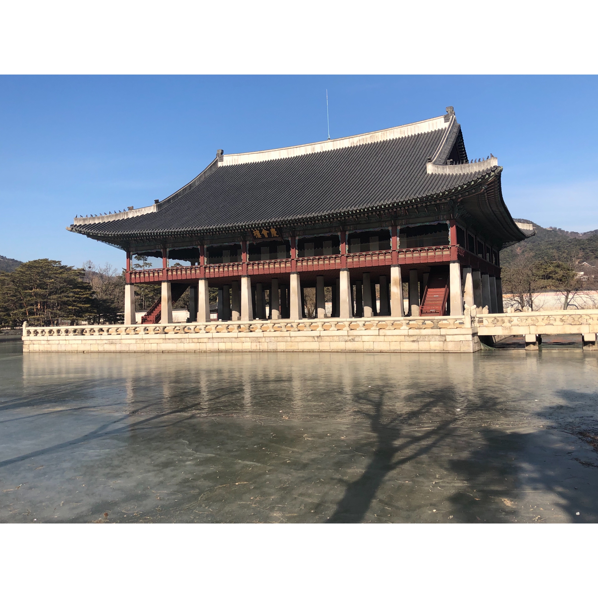

The purpose of lab 5 is to create a web page with images and be able to link to other websites using the images or text link.
After completing the lab, we faced very few challenges and we were able to get our pages to work as we wanted them to. One of the few challenges we faced was being able to correctly link the images to our websites and testing them to make sure they worked on our local machine before we were able to push them up to our server.
Below are the results for Lab 5: More HTML
